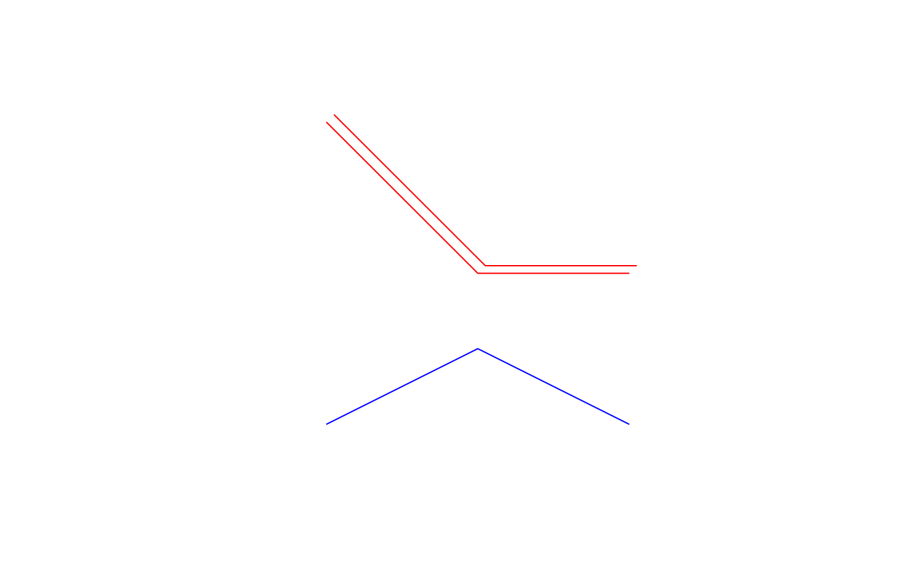

SpatialLines-class.Rda class that holds spatial lines
hold a list of Lines objects; each Lines object holds a list of Line (line) objects.
lines:Object of class "list"; list members are all of
class Lines-class
bbox:Object of class "matrix"; see Spatial-class
proj4string:Object of class "CRS"; see CRS-class
Class "Spatial", directly.
signature(obj = "SpatialLines"): select subset of (sets of) lines; NAs are not permitted in the row index
value is a list of lists with matrices
signature(x = "SpatialLines", y = "missing"):
plot lines in SpatialLines object
signature(x = "SpatialLines"):
add lines in SpatialLines object to a plot
signature(object = "SpatialLines"):
rbind-like method, see notes
signature(object = "SpatialLines"):
summarize object
rbind calls the function SpatialLines, where it is
checked that all IDs are unique. If rbind-ing SpatialLines without
unique IDs, it is possible to set the argument makeUniqueIDs = TRUE, although
it is preferred to change these explicitly with spChFIDs.
The plot method for “SpatialLines” objects takes the following arguments:
object of class SpatialLines
default NULL; the x limits (x1, x2) of the plot
default NULL; the y limits of the plot
default 1; default plotting color
default 1; line width
default 1; line type
default FALSE; add to existing plot
default FALSE; a logical value indicating whether both axes should be drawn
default 0; line end style
default 0; line join style
default 10; line mitre limit
passed through
set the par “usr” bounding box, see note in Spatial-class
# from the sp vignette: l1 = cbind(c(1,2,3),c(3,2,2)) rownames(l1) = letters[1:3] l1a = cbind(l1[,1]+.05,l1[,2]+.05) rownames(l1a) = letters[1:3] l2 = cbind(c(1,2,3),c(1,1.5,1)) rownames(l2) = letters[1:3] Sl1 = Line(l1) Sl1a = Line(l1a) Sl2 = Line(l2) S1 = Lines(list(Sl1, Sl1a), ID="a") S2 = Lines(list(Sl2), ID="b") Sl = SpatialLines(list(S1,S2)) summary(Sl)#> Object of class SpatialLines #> Coordinates: #> min max #> x 1 3.05 #> y 1 3.05 #> Is projected: NA #> proj4string : [NA]